Source: Dr. Amir workshop — Med workshop 2 - 2026 / CLASS 4 TIREDNESS (Aug 2026 drop) · Specialty: general_practice
History: introduce yourself, respond to concerns, then explore tiredness (meaning — very low energy; timing; on/off or constant; getting worse; alleviating/aggravating factors; effect on life).
Differentials: hepatitis (jaundice, dark urine, pale stool); haemochromatosis (skin tanning); endocrine — thyroid (temperature intolerance, constipation) and diabetes (increased thirst, polyuria — usually positive; increased appetite; recurrent infections). Ask about one DM complication (retinopathy, neuropathy or DKA symptoms: abdominal pain, nausea, vomiting) without running out of time. Malignancy (weight loss, appetite, lumps, night sweats, family history). Infections (fever, chills, rash, sore throat; sexual activity; zoonotic — animal contact/Q fever in rural Queensland; bushwalking — tick/mosquito bites). Add remaining ADCOP if time; malignancy and infection questions are mandatory.
PEFE: general appearance (cachexia, rash, dehydration); vital signs (especially temperature); all lymph nodes; CVS; respiratory; abdomen (splenomegaly). Office tests: BSL >11.1 mmol/L random; urine dipstick glucose 4+, ketones 3+. Choose one or two DM tests (sensory neuropathy of lower limb; fundoscopy/acanthosis nigricans).
Diagnosis: DKA, a complication of undiagnosed diabetes — high blood sugar causes the body to produce ketones. Reasons: thirst, polyuria, high blood sugar, and glucose plus ketones in the urine. Then quickly list differentials (malignancy — leukaemia/lymphoma but no weight loss; travel infections — dengue, Ross River fever; zoonotic Q fever; EBV; psychological; thyroid; OSA; hepatitis; anaemia; autoimmune IBD/coeliac; occupational). This is an old AMC case where candidates fail by running out of time.
History (2025 version): patient reports tiredness since returning from Cairns and pain around the left costal margin/LUQ. Keep tiredness as the key complaint. Explore tiredness (feverish, hot and cold; getting worse; several weeks since return; constant/on-off; effect on life). Explore pain briefly with SIQORAA (site — stomach/ribcage; quality — dull ache, not burning like PUD/GORD; radiation — may radiate to chest) as it is a 5-minute history.
Travel history (key, ABCDEF): Activities in Cairns; Bushwalking/insect bites; Contact with sick people or animals; Drugs; Exposure (tattoo/piercing); Food/water (unbottled water, street food); sexual activity; pre-travel GP visit. A proper travel history is essential to pass.
Differentials: infections first — fever/chills, rash; viral/flu-like symptoms (cough — dry); sexual history. Then rule out other differentials (H E M — can bring malignancy first).
PEFE: general appearance (cachexia, rash, dehydration); vital signs (temperature 38.5/37.7); no lymphadenopathy; thyroid normal; respiratory — symmetrical chest movement, dullness at the right base, crepitations same side; CVS normal; abdomen normal; office tests normal. Pleural effusion is excluded because breath sounds and crackles are present.
Diagnosis: atypical pneumonia (a lung infection with a special type of bug). Typical vs atypical: typical is more acute with chesty cough and high fever, presents within days, lobar pneumonia on CXR; atypical is travel-linked with dry cough, longer duration (weeks), more constitutional symptoms (diarrhoea, weight loss, body ache, tiredness) and does not respond to typical antibiotics. Reasons: dry cough, recent travel, constitutional symptoms, poor response to regular antibiotics, and examination features of lung infection. TB is less likely as Cairns is not a typical TB area and the infection is not at the typical TB site.
Differentials: TB; lung cancer (concern re weight loss and cough); other malignancies (leukaemia, lymphoma); travel-related infections (hepatitis, gastroenteritis, Ross River fever, EBV, HIV); then DM, thyroid. Cancers and infections must be ruled out.
Reference case (RACGP check): Sally, 21, has worsening daytime tiredness over a year, falling asleep in lectures and napping between classes. She lives with parents, does not smoke, drinks 1–2 standard drinks per week, and drinks at least five coffees/energy drinks per day. She goes to bed ~9.30 pm, falls asleep immediately, wakes once to void, and sleeps until 7.00 am (believes ~9 hours). She describes episodes of sleep paralysis and hypnopompic hallucinations (people standing over her, calling her name) at least weekly for 12 months, but no cataplexy, no snoring, no choking/gasping, and often feels refreshed after naps. No medications, no illicit drugs, no clear mood disorder. Note: most young adults (18–25) need 7–9 hours of sleep; sleep is disrupted by phone/light-emitting devices in bed.
History taking: introduction and open question — patient reports tiredness that began with exams and persists though exams are over. Explore tiredness (sleepy, constant yawning), timing, alleviating/aggravating factors, effect on life. Detailed sleep history: pre-sleep/environment (bedtime, sleep latency, phone/TV use, dark/quiet room, pets); sleep phase (hours, refreshing, initiation, night waking, nightmares); interference/risk factors (stimulants — drugs, medications, alcohol, coffee/tea; medical conditions; OSA — snoring/gasping; iron-deficiency-related restless legs; narcolepsy — frightening experiences on falling asleep/waking). Usual findings: cannot sleep properly, ~5–6 hours sleep, 5–6 coffees per day.
Differentials (must do): narcolepsy (sleep paralysis, sudden weakness/strong emotion), psychological history (mood, appetite, anhedonia, stress), LMP/heavy periods, malignancy (weight/appetite loss), endocrine (thyroid/DM), infections (HEMIADCOP).
Diagnosis: insufficient sleep/sleep deprivation. Reasons: poor-quality sleep, only ~5 hours per night, and a normal remaining history/examination. Differentials: OSA (no snoring/gasping), narcolepsy (no sleep paralysis), adjustment disorder/MDD (mood ok, still enjoys activities), drugs/alcohol excluded, pregnancy excluded (LMP 2 weeks ago), cancers (no weight loss) and infections (no fever).
History: patient reports excessive tiredness, getting worse, and mentions their BP is okay (the lead point/hypertension is in the stem — explore it). Explore tiredness (usually sleepy; timing; tired throughout the day or only in the morning; getting worse; effect on life).
Hypertension (lead point): duration, treatment and compliance, follow-up; complications — HF/IHD (exertional chest pain, exertional SOB, orthopnoea, number of pillows, leg swelling).
Sleep history and differentials: screening (hours, initiation/maintenance); OSA — snoring/gasping (yes, partner-witnessed), leg pain. If OSA suggested: morning sleepiness/tiredness, morning headache, difficulty concentrating, occupation (truck driver), recent weight gain, alcohol/drugs. Then malignancy, infections, and HEMIADCO if time.
PEFE: general appearance (cachexia, rash); vital signs (temperature); no lymph nodes; thyroid normal; CVS (JVP not raised, apex not displaced, S1/S2/murmurs); respiratory (no added sound); abdomen (no hepatosplenomegaly); office tests (BSL, urine dipstick). Additional ENT: throat (narrow airway, large tonsils), nasal (septal deviation, polyps); note BMI and neck circumference.
Diagnosis: obstructive sleep apnoea — during sleep the throat muscles become floppy and block the airway, causing snoring and gasping and disturbed sleep. Reasons: snoring, morning symptoms (poor concentration, headache, tiredness worse in the morning), hypertension (associated with OSA), and a narrow airway on examination. Differentials: heart failure/IHD (no chest pain); narcolepsy and other sleep disorders (caffeine, mood, nocturnal pain); cancers (leukaemia/lymphoma — no weight loss); infections (no fever); other HEMIADCO causes.
History: introduction, respond to concerns, explore tiredness (low energy; timing; getting worse; alleviating/aggravating; effect on life) and loss of weight (how many kilos, over what period, intentional?).
Temporal arteritis and PMR: when diagnosed, treatment and compliance (if stopped — who advised it, was it stopped abruptly), regular follow-up; complications (headache, visual problems); PMR symptoms (shoulder pain/stiffness); relapse questions.
Differentials: cancers (appetite, lumps, night sweats, family history, breast/cervical/bowel screening); period (LMP, hot flushes, sleep); geriatric psychosocial assessment (mood, anhedonia, stress, support at home, who they live with, diet/who cooks, memory); steroid effects — endocrine (DM: thirst/polyuria; thyroid: temperature intolerance, constipation); rule out remaining HEMIADCOP. Good closure: SADMA, past medical history, family history (7 minutes is a long history).
Version 1 (adrenal insufficiency): she was on prednisolone but stopped it herself (busy after her dog died) and stopped abruptly. Diagnosis: adrenal insufficiency — abruptly stopping long-term steroids affects the adrenal gland, which cannot restart immediately. Reason: tiredness after suddenly stopping steroids. Differentials: cancers (leukaemia/lymphoma), menopause, depression, relapse of PMR/TA, then DM/HEMIADCOP.
Version 2 (MDD): the patient is still taking steroids or the dose was tapered, so it is not adrenal insufficiency — rule out differentials. Explore mood (sad), anhedonia (no), sleep (poor), appetite (poor), weight change, self-harm/suicidal ideation (none), concentration, guilt/worthlessness — yielding at least 5/8 features of MDD. Diagnosis: major depressive disorder — a mood disorder causing low mood, disturbed sleep/appetite, tiredness and poor concentration (5 of 8 criteria). Also add complications of sarcoidosis (rashes, cough, SOB) where relevant. Rule out all differentials; do not be biased by recalls (this is not ‘empty nest syndrome’).
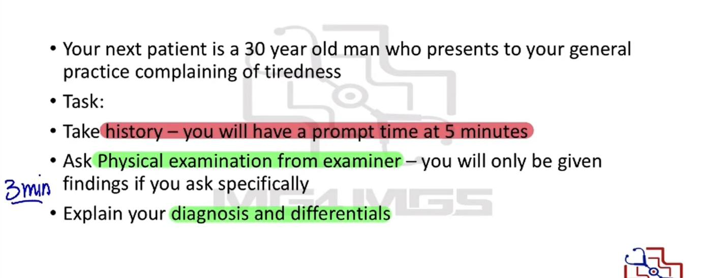
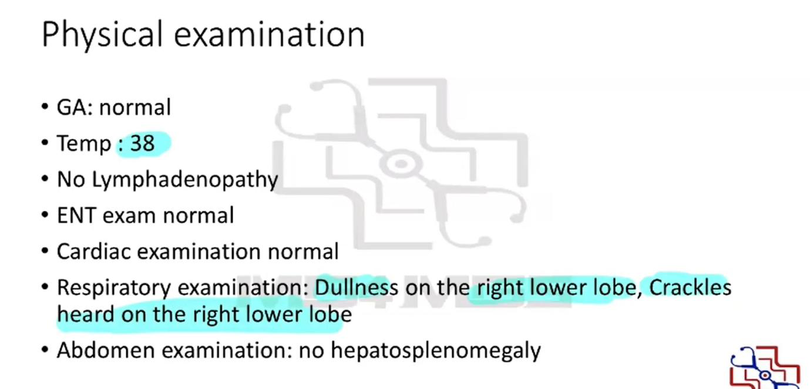
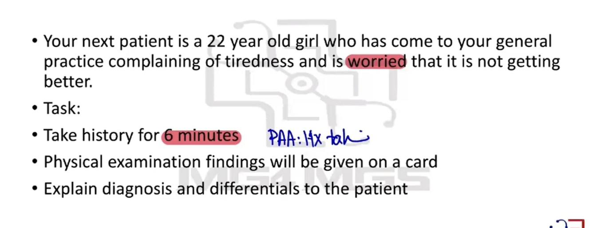
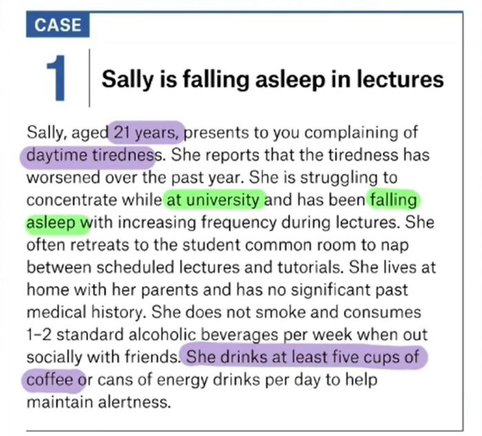
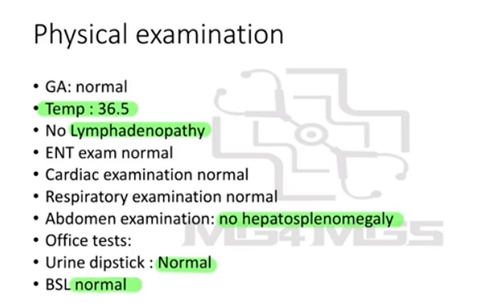
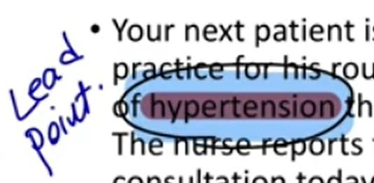
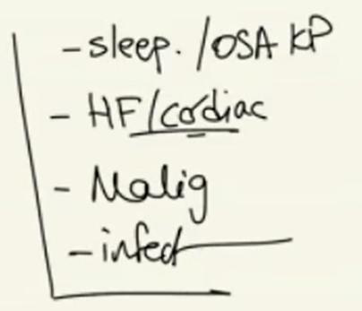
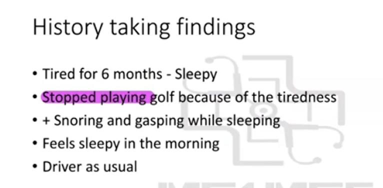
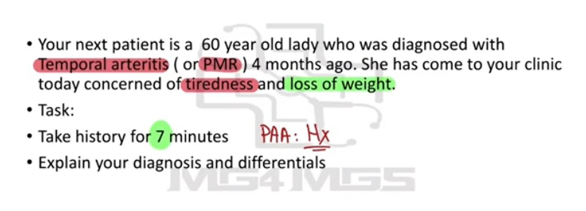
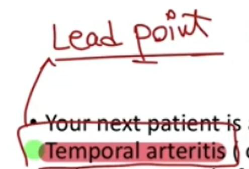
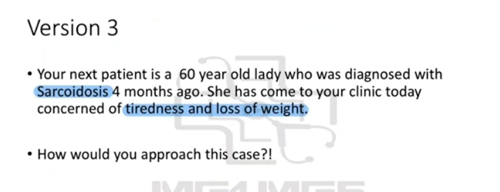
Reviewed by: history-taking-expert (Australian clinical supervisor) · fact-checked against the irStudy medical textbook RAG index.